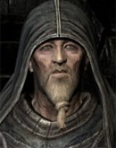

Вернувшись в штаб, вам сказали, что ваше задание приостановлено
— На данный момент мы обезвредили Генри. Мы будем следить и введём тебя в курс дела, если ты понадобишься.
— Но.. Понятно. Для меня есть другая работа?
— Да. Далеко на юге, практически у границы материка есть городок - Дрейнстиг. От тебя требуется устранить графа-революционера Прейта и подстроить это как самоубийство или несчастный случай.
— Вас понял. Мне будут предоставлены помощники или помощь?
— Тебе выделили карету для передвижения, прислугу и небольшой дом на окраине города.
— Отправляюсь на выполнение задания. Nomine Mortis.
Отправиться в Дрейнстиг